4.3.1. ［ジョブ］の操作と設定
帳票を印刷するためにデータファイル名やXML様式ファイルの名称、出力先などの設定をします。*印は必須の設定です。
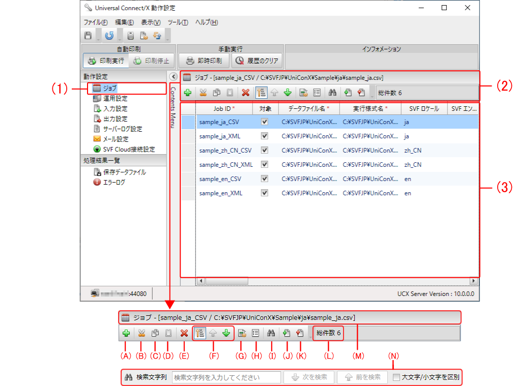
［ジョブ］の操作と設定 コンテンツツールバー（2）
動作設定で(1)［ジョブ］をクリックし、(2)、(3)を表示します。
各項目を設定します。
記号
項目
説明
-
ジョブを選択
(A)下部の各アイテム行頭をクリックすると、ジョブを選択できます。
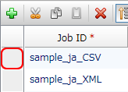
-
ジョブをすべて選択
(A)下部の「Job ID*」左側のカラムをクリックすると、ジョブをすべて選択できます。
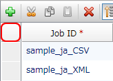
(A)
ジョブの追加
クリックすると、［Job ID*］欄にジョブが追加されます。
(B)
ジョブの切り取り
切り取るジョブを選択し、クリックすると、選択したジョブが切り取られます。
(C)
ジョブのコピー
コピーするアイテムを選択し、クリックすると、選択したアイテムがコピーされます。
(D)
切り取り、コピーしたジョブを挿入
挿入したいジョブを選択し、クリックすると、切り取り、またはコピーしたジョブが選択した行の下に挿入されます。
(E)
ジョブを削除
削除するジョブを選択し、クリックすると、確認メッセージが表示されます。
「OK」をクリックすると選択したジョブが削除されます。
(F)
並び替えモード
ジョブの実行する順番を設定します。
クリックすると、並び替えモードのオン/オフを切り替えられます。並び替えモードのときは、とがアクティブになり、ジョブの順番を入れ替えることができます。
再度クリックすると、表示がに変わり、並び替えモードが解除されます。
(G)
一括設定
クリックすると、［一括設定］ダイアログが表示されます。各カラムの詳細は「［ジョブ］の操作と設定 ジョブ一覧（3）」以降を参照してください。
参考
Shift、またはCtrlキーを押しながら複数のジョブを選択して、クリックすると、「更新」カラムが追加された［一括設定］ダイアログが表示されます。
選択した複数のジョブをまとめて同じ値に設定できます。
値を変更する場合は、「更新」欄のチェックをオンにした後、値を変更します。
値のベースになるJob IDがダイアログの最上部に表示されます。
［SVF Cloud接続設定］は、1つ以上のSVF Cloud接続設定が登録されている場合のみ表示されます。
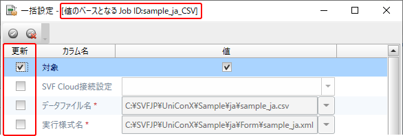
(H)
表示項目設定
クリックすると、［表示項目設定］ダイアログが表示されます。チェックボックスの設定で、(2)［ジョブ］の表示項目を変更できます。
参考
［SVF Cloud接続設定］は、1つ以上のSVF Cloud接続設定が登録されている場合のみ表示されます。
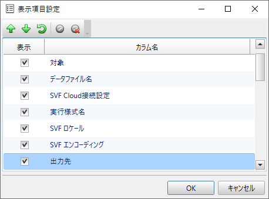
並び替えるカラム名を選択し、をクリックすると上に、をクリックすると下に移動します。
をクリックすると、既定のカラム順序に戻ります。
をクリックすると、すべての［表示］欄がオンになります。
をクリックすると、すべての［表示］欄がオフになります。
(I)
アイテムの文字列を検索
クリックすると、(N)［検索］バーが表示されます。
［検索］欄に検索するアイテムの文字列を入力し、Enterキーを押すと検索結果が表示されます。
またはをクリックするたびに、検索された文字列を含むカラムが切り替わります。
［大文字/小文字を区別］欄をオンにすると、検索する文字列の大文字/小文字を区別して検索します。
(J)
ジョブのインポート
クリックすると、［インポートするファイル］ダイアログが表示されます。
インポートするジョブのファイルを選択し、［開く］ボタンをクリックすると、ジョブがインポートされます。
インポートするCSVファイルについては、「CSVファイルの形式」を参照してください。
(K)
ジョブのエクスポート
クリックすると、［エクスポート先ファイル］ダイアログが表示されます。
エクスポートするジョブのディレクトリおよびファイル名を指定し、［保存］ボタンをクリックすると、ジョブがエクスポートされます。
エクスポートしたCSVファイルについては、「CSVファイルの形式」を参照してください。
(L)
ジョブの総数
表示されているジョブの総数が表示されます。
(M)
選択したジョブ
選択したジョブの［Job ID*］と［データファイル名*］が表示されます。
設定を保存する場合は、［ファイル］－［保存］を選択するか、をクリックします。
［ジョブ］の操作と設定 ジョブ一覧（3）
動作設定で(1)［ジョブ］をクリックし、(2)、(3)を表示します。
各項目を設定します。
項目
説明
Job ID *
Universal Connect/XサーバーとJob IDでユニークなリソースとして定義します。
半角英数字およびアンダースコアのみ有効です。「Job ID*」は必須項目で、主に外部ユーティリティのUCXSingleで指定するときに利用されます。
「Job ID*」は、データファイル名を新しく追加すると自動的に「JOB001」「JOB002」...という名前で定義されます。任意のユニークなIDに変更することもできます。
対象 *1
タイマー監視、および即時実行するジョブを指定できます。たとえばテスト印刷時に指定することで、任意のジョブのみ確認することもできます。テスト印刷しない場合は、タイマー監視するジョブを指定します。
サブジョブを使用する場合、親ジョブのみオンにしてください。サブジョブについては、「サブジョブの使用について」を参照してください。
なお、この設定は、［運用設定］画面の［ファイル監視と即時実行するジョブの指定を行う］がオンのときのみ表示されます。詳細は「ファイル監視と即時実行ジョブの設定」を参照してください。
SVF Cloud接続設定
SVF Cloudを使用して出力する場合、およびSVF Cloudから出力した文書をinvoiceAgent 文書管理 / AI OCRに格納する場合に「［SVF Cloud接続設定］の操作と設定」で登録したSVF Cloud接続設定を指定します。
指定しない場合は、Universal Connect/Xサーバー上のSVF実行部製品を使用して出力します。
制限
SVF Cloud接続設定を指定した場合は以下の制限があります。
［実行様式名］にクエリー様式ファイルを指定できません。
Report Director Enterpriseと連携できません。
その他、Universal Connect/Xの印刷処理をSVF Cloudで行う場合の制限事項については、ナレッジベースの『Universal Connect/Xの印刷処理をSVF Cloudで行う場合の制限事項について』（https://cs.wingarc.com/ja/kb/000016482）を参照してください。
参考
この項目は、1つ以上のSVF Cloud接続設定が登録されている場合のみ表示されます。
データファイル名 *
実際に印刷するデータファイル名を設定します。CSV、またはXMLデータ形式であれば、ファイルの拡張子は自由に設定できます。
注意
CSV、XML以外の拡張子のテキストデータを使用する場合は、［入力設定］の［CSV ファイル定義］または［XML ファイル定義］で、デフォルト拡張子を定義できます。詳細は「［入力設定］の操作と設定」を参照してください。
データファイル名にURLを指定して即時印刷による処理をする場合、［運用設定］で［URL をデータファイル名とするジョブを即時印刷対象にする］欄をオンにする必要があります。
データファイル名にURLを指定した場合、実行時「インストール先\urls」配下に、実行用の仮想ディレクトリが作成されます。
データファイル名を手入力で設定する場合は、設定するカラム上で左クリックをすると入力できます。
データファイル名をダイアログから設定をする場合は、設定するカラム上のセルをクリックした後、
 をクリックして項目を選択します。
をクリックして項目を選択します。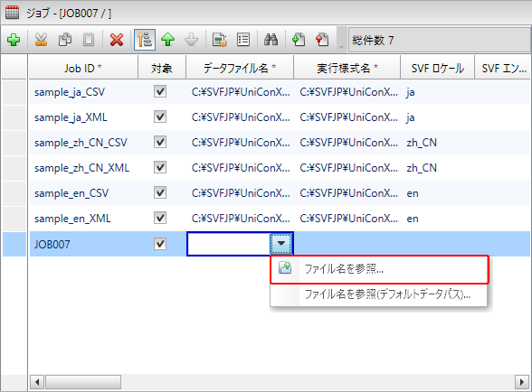
ファイル名を参照...
［ファイル選択］ダイアログが表示され、データファイルを選択できます。
ファイル名を参照(デフォルトデータパス)...
［ファイル選択］ダイアログが表示され、データファイルを選択すると「データファイル名」に「%DEFPATH%」が付加されます。
例
%DEFPATH%ja\sample_conditional_ja.csv
「%DEFPATH%」は、［入力設定］の［デフォルトパス］の［データファイル］のパスを表しています。
［入力設定］の［デフォルトパス］の［データファイル］のパスを変更することで、「%DEFPATH%」を使用しているジョブのデータファイル名のパスを一括で変更することができます。
データファイル名の指定には、ワイルドカードを使用できます。ただしクエリー様式ファイル、UCXSingle（データファイル非転送時）を利用して印刷する場合は、指定できません。
参考
ワイルドカードを使用した入力
動作設定では、データファイル名などにワイルドカードを使用して入力できます。ワイルドカードを使用したデータファイルの指定例は次のとおりです。
*.csv
A社.csv、B社.csv、C社.csv...
納品帳票*.txt
納品帳票赤坂支店.txt、納品帳票渋谷支店.txt...
納品帳票?.txt
納品帳票1.txt、納品帳票2.txt...
ワイルドカードを使用するには［ファイル定義］欄に、使用する書式定義ファイルを設定する必要があります。設定方法については、本表の「ファイル定義」を参照してください。
実行様式名 *
実際に印刷する時に使用する帳票の様式ファイル名を設定します。クエリー様式ファイルを利用して印刷をする場合は、ここにクエリー様式ファイルを設定します。
参考
クエリー様式ファイルを設定する場合、［データファイル名*］にはクエリーで使用するデータファイルの1つを指定します。
実行様式名を手入力で設定する場合は、設定するカラム上で左クリックをすると入力できます。
実行様式名をダイアログから設定をする場合は、設定するカラム上のセルをクリックした後、
をクリックして項目を選択します。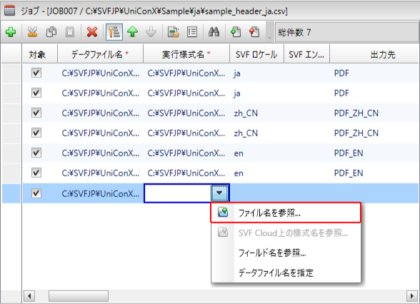
［ファイル名を参照...］
すべてのデータを指定した様式フォームで印刷します。表示される［ファイル選択］ダイアログからXML様式ファイルを選択します。
［SVF Cloud上の様式名を参照...］
SVF Cloud上に配置した様式フォームで印刷します。表示される［ファイル選択］ダイアログから様式ファイルを選択します。Ver.10.3以降では、SVF Cloudを使用して出力する場合、SVF Cloud Excel Designerで作成したExcel様式ファイルおよび、SVF Cloud Word Designerで作成したWord様式ファイルも指定できます。SVF Cloud Excel DesignerまたはSVF Cloud Word Designerで作成した様式ファイルは、あらかじめSVF Cloudにアップロードされている必要があります。
参考
ジョブに、［帳票リソースのパス基準］に「SVF Cloud」を指定したSVF Cloud接続設定が指定されている場合にのみ選択できます。
［フィールド名を参照...］
データファイルのフィールド名に対するデータがXML様式ファイル名として指定されます。表示される［フィールド選択］ダイアログからフィールド名を選択します。データファイルから取得したフィールドの内容に拡張子（.xml）がついたファイルが様式フォームとして使用されます。
たとえば、得意先ごとに様式フォームが異なる場合、得意先コードのフィールド名を記載します。XML様式ファイルとしては、「得意先コード.xml」というファイルを必要な数だけ作成します。
例 フルパスで入力する場合
フィールド名: 仕入先住所1
フィールドデータ: Tokyo
様式フォーム: Tokyo.xml
パス: D:\Universal Connect X\Xml\
［実行様式名］設定内容: D:\Universal Connect X\Xml¥+?仕入先住所1
「仕入先住所1」フィールドに「Tokyo」のデータが入ると、「D:\Universal Connect X\Xml\Tokyo.xml」と置き換えられます。
例 ディレクトリを省略する場合
［実行様式名］設定内容: ?仕入先住所1
ディレクトリを省略する場合の参照先は、［実行様式ファイル検索パス］の設定に従います。
［実行様式ファイル検索パス］の設定方法については、本表の［実行様式ファイル検索パス］を参照してください。
制限
［帳票リソースのパス基準］が「SVF Cloud」のSVF Cloud接続設定を指定したジョブでは、ディレクトリを省略できません。
なお、置換マスターを利用すると、よりきめ細かく様式ファイルが設定できます。置換マスターの詳しい操作については、「［置換マスター］の操作と設定」を参照してください。
注意
「+」は「D:\Universal Connect X\Xml\」と「?仕入先住所1」を連結する役割をしています。
［データファイル名*］欄で、設定したデータファイル名に対してファイル書式定義がされていない場合は、［フィールド名を参照］ポップアップメニューは選択できません。ファイル書式定義の方法については「ファイル書式定義の設定（CSV形式）」、「ファイル書式定義の設定（XML形式）」を参照してください。データ定義については「CSVデータファイル」、「XMLデータファイル」を参照してください。
ODBCドライバー経由でデータ抽出をする場合はWindows上で使用する必要があります。
［データファイル名を指定］
選択すると「%DATAFILENAME%」と記述されます。データファイル名でワイルドカードを使用した場合は、データファイル名に応じてXML様式ファイルを切り替えることができます。
データファイル名
XML様式ファイル名
納品書000401.txt
納品書000401.xml
納品書000402.txt
納品書000402.xml
ディレクトリ指定がない場合はデータファイルディレクトリ+データファイル名+.xmlとなります。ディレクトリが指定された場合は、指定に従います。
制限
［帳票リソースのパス基準］が「SVF Cloud」のSVF Cloud接続設定を指定したジョブでは、ディレクトリを省略できません。
参考
動作設定における文字列演算
動作設定の実行様式名、帳票名などの入力においては、文字列の演算を使用できます。
たとえば、帳票名の指定に次のように入力することで、よりわかりやすい帳票名を作り出すことができます。
?会社名+ ?支店コード
ABCテクノロジーズ001
?会社名+ ?支店名
ABCテクノロジーズ赤坂支店
?得意先コード+ ?帳票ID
100001A01
SVF ロケール
SVF関連製品で出力する場合のロケールを（VrSetLocale関数動作時のロケール）設定します。
参考
指定がない場合は、［出力設定］画面の［SVF ロケール］の設定で実行されます。
指定可能なロケールは、『SVF Java PRODUCTS API関数リファレンスマニュアル』の「3-2 共通関数」にある「VrSetLocale」を参照してください。
SVF エンコーディング
SVF関連製品で出力する場合のエンコーディング（VrInit関数動作時のエンコーディング）を設定します。
参考
指定がない場合は、［出力設定］画面の［SVF エンコーディング］の設定で実行されます。
指定可能なエンコーディングは、『SVF Java PRODUCTS API関数リファレンスマニュアル』の「3-2 共通関数」にある「VrInit / VrInitEx」関数の引数に関する説明を参照してください。
SVFエンコーディング設定後に、対応していないSVFロケールを選択した場合は、保存時にエラーメッセージが表示されます。
SVFロケール選択後は、対応しているエンコーディングのみ選択できます。
出力先
印刷データの出力先を設定します。指定がない場合は、SVF環境設定でデフォルト指定されている出力先へ出力します。
出力先を設定する場合は、カラム上のセルをクリックした後、
をクリックして項目を選択します。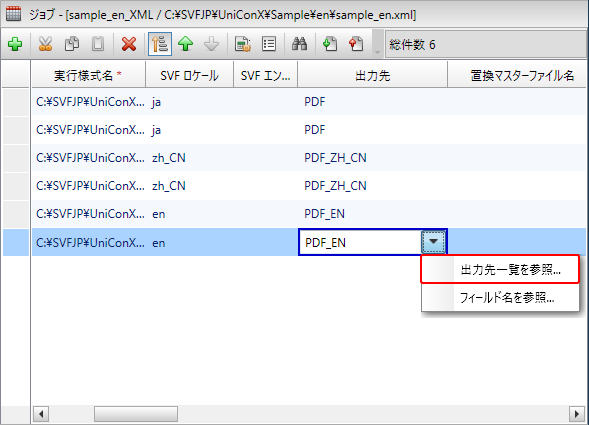
出力先一覧を参照...
ジョブにSVF Cloud接続設定が指定されていない場合
［出力先一覧］画面が表示され、SVF環境設定で作成されているプリンターが一覧表示されます。一覧表示から使用するプリンターを選択します。
Ver. 10.3以降では、出力先を複数指定できます。出力先を複数指定した場合、文書分割と、SVFのプリンター機種「Adobe PostScript」と「PDF」で設定したページの分割は無効になります。SVF製品により生成される出力ファイルを、UCXSingleで指定したファイル名で受け取るように設定して出力する場合、ファイル出力のプリンターは1つのみ指定できます。
注意
SVF環境設定でプリンターを作成していない場合は、プリンターの一覧は表示されません。
ジョブにSVF Cloud接続設定が指定されている場合
［出力先一覧］画面が表示され、指定されたSVF Cloud接続設定のプリンター設定に登録されている出力先が表示されます。一覧表示から使用する出力先を選択します。
SVF Cloud Excel Designerで作成したExcel様式ファイルを使用した出力の場合、「EXCEL」のみが指定できます。SVF Cloud Word Designerで作成したWord様式ファイルを使用した出力の場合、「WORD」のみが指定できます。
出力した文書をinvoiceAgent 文書管理 / AI OCRに格納する場合、SVF Cloud 接続設定の［帳票リソースのパス基準］の設定により、選択可能な出力先が異なります。
［帳票リソースのパス基準］が「SVF Cloud」の場合
PDF、EXCEL、WORD
［帳票リソースのパス基準］が「UCX Server」の場合
PDF
フィールド名を参照
表示される［フィールド選択］ダイアログからフィールド名を選択します。先頭の「?」は自動的に付加され、データファイルから取得したフィールドの内容が出力先として設定されます。
例 単独のフィールド名で指定する場合
フィールド名: 出力先指定
フィールドデータ: RICOH_IPSIO
［出力先］設定内容: ?出力先指定
「出力先指定」フィールドに「RICOH IPSIO」のデータが入ると、「RICOH IPSIO」と置き換えられます。
例 複数のフィールド名で指定する場合
フィールド名: 「マシン名」、「プリンター名」
［出力先］設定内容: ?マシン名+?プリンター名
フィールドを複数設定する場合は、［フィールド選択］ダイアログから複数回選択します。各フィールド名は「+」で連結されます。
注意
［データファイル名*］欄で設定したデータファイル名に対して、ファイル書式定義されていない場合は、［フィールド名を参照］ポップアップメニューは選択できません。csvとxmlのファイル書式定義については「［入力設定］の操作と設定」を参照してください。
置換マスターファイル名
使用する置換マスターファイルを設定します。置換マスターファイルを設定するには、手入力する方法とダイアログから選択して設定する方法があります。手入力する場合は、設定するカラム上で左クリックをすると入力できます。ダイアログから設定をする場合は、カラム上のセルをクリックした後、
をクリックして項目を選択します。置換マスターの詳しい操作については、「［置換マスター］の操作と設定」を参照してください。
参考
ジョブでの［SVF Cloud接続設定］の指定有無と、利用する置換マスターファイルでの［SVF Cloud接続設定］の指定有無の組み合わせに制限はありません。［SVF Cloud接続設定］の指定がないジョブで［SVF Cloud接続設定］が指定されている置換マスターファイルを利用できます。また、その逆も同じように利用できます。
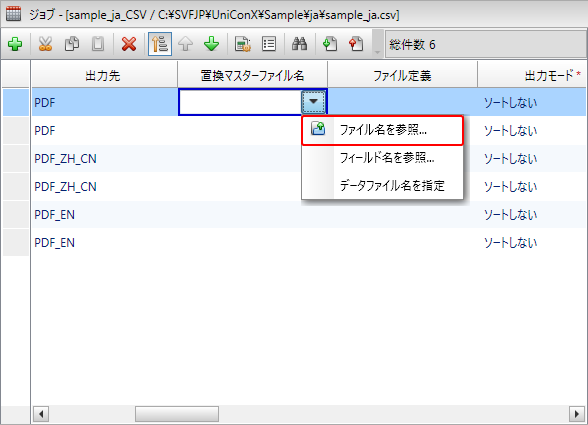
ファイル名を参照...
表示される［ファイル選択］ダイアログから置換マスターファイル（.mst）を選択します。すべてのデータに同じ置換マスターを適用します。
フィールド名を参照...
表示される［フィールド選択］ダイアログからフィールド名を選択します。先頭の「?」は自動的に付加され、データファイルから取得したフィールドの内容に拡張子（.mst）がついたファイルが置換マスターとして使用されます。
たとえば、得意先ごとに置換マスターを変更する場合は、得意先コードのフィールド名を記載します。置換マスターファイルとしては、「?フィールド名.mst」というファイルをフィールドデータがブレイクする度に検索します。
例
フィールド名: 仕入先名
フィールドデータ: ABC
置換マスターファイル: ABC.mst
パス: D:\Universal Connect X\mst\
［置換マスターファイル名］設定内容: D:\Universal Connect X\mst¥+?仕入先名
「仕入先名」フィールドに「ABC」のデータが入ると、「D:\Universal Connect X\mst\ABC.mst」と置き換えられます。
データファイル名を指定
選択すると「%DATAFILENAME%」と記述されます。［データファイル名*］欄に記載したデータファイル名の拡張子を「.mst」に変更したファイルが、置換マスターファイルとなります。データファイル名でワイルドカードを利用した場合は、データファイル名に応じて置換マスターファイルを切り替えることができます。
ディレクトリ指定がない場合はデータファイルディレクトリ+データファイル名.mstとなり、ディレクトリが指定された場合は、指定に従います。
例 フルパスで入力する場合
データファイル名: C:\Universal Connect X\Data\CSV01.txt
フィールドデータ: ABC
置換マスターファイル: CSV01.mst
パス: D:\Universal Connect X\mst\
［置換マスターファイル名］設定内容: D:\Universal Connect X\mst¥+%DATAFILENAME%
注意
「+」は「D:\Universal Connect X\mst\」と「?仕入先名」を連結する役割をしています。
［データファイル名*］欄で、設定したデータファイル名に対してファイル書式定義されていない場合は、［フィールド名を参照］ポップアップメニューは選択できません。csvとxmlのファイル書式定義については「［入力設定］の操作と設定」を参照してください。
［置換マスター］で設定したフィールド名を、［ジョブ］の［実行様式名］などでフィールド参照してください。
［ジョブ］において、置換するためのフィールド参照設定は1か所としてください。複数に設定すると、意図しない置換結果になる場合があります。
<start><end>を記載しているデータファイルを処理する場合に、関数とフィールド参照の設定内容が重複した際は、関数の指定が優先されるため、置換マスターが無効になります。
ファイル定義
使用する書式定義ファイルを設定します。何も指定しない場合は、「データファイル名*」で指定されたデータファイルの書式定義情報が印刷時に使用されます。
書式定義ファイルを設定するには、直接手入力する方法と一覧から選択して設定する方法があります。手入力する場合は、設定するカラム上で左クリックをすると入力できます。
をクリックして［ファイル定義一覧を参照...］を選択すると、［データファイル名*］で設定したデータディレクトリ内の「schema.ini」に定義されているファイル書式定義が表示されます。書式定義ファイルがない場合はブランク表示となります。ファイル定義に「カンマ区切り」、「タブ区切り」、「カスタム区切り」を指定した場合には、「schema.ini」の書式定義情報を使用せず、データファイルを処理します。
注意
通常、ファイル書式定義はデータファイルごとに行いますが、ファイルの構造が同様な場合は、他のデータファイルの書式定義情報を使用できます。
XMLデータ形式の場合は、書式定義情報の有無にかかわらず印刷できます。
データファイル名がURLの場合は、Universal Connect/Xサーバーで実行用に作成されたディレクトリに作成された仮想ディレクトリから「schema.ini」を参照します。
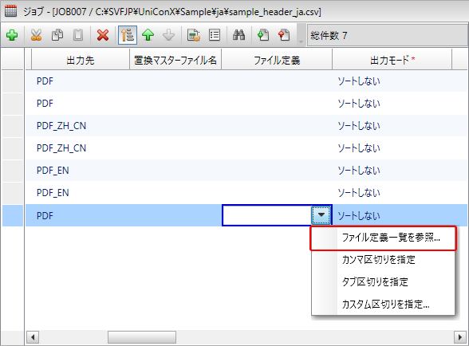
［ファイル定義一覧を参照...］
［ファイル定義一覧］ダイアログを開きます。あらかじめ登録した書式定義ファイルが表示されます。
入力補助で指定されたファイル定義が表示されます。
［カンマ区切りを指定］
「/*DATA*/」が［ファイル定義］欄に入力されます。データファイルがカンマ区切りで読み込まれます。
［タブ区切りを指定］
「/*TAB*/」が［ファイル定義］欄に入力されます。データファイルがタブ区切りで読み込まれます。
［カスタム区切りを指定...］
［カスタム区切り設定］ダイアログを開きます。データファイルに設定された区切り文字などを指定できます。
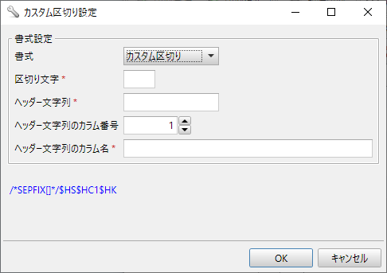
［カスタム区切り設定］ダイアログでは、次の太字の項目を設定します。
/*SEPseparatestring[separator]*/$HSheaderstring$HCheadercol$HKheaderitemstring
（［separator］はカスタム区切りの場合のみ指定します）
separatestring
区切り文字を指定します。
カンマ区切り: CSV
タブ区切り: TAB
カスタム区切り: FIX
separator
カスタム区切り文字を指定します。
カスタム区切り文字が"#"の場合 # を指定します。
カスタム区切り文字では、2byte以上は指定できません。
headerstring
ヘッダー文字列を指定します。
ヘッダー文字列が"*"の場合 * を指定します。
headercol
ヘッダーカラム番号を指定します。
ヘッダーカラム番号が1の場合1を指定します。
headeritemstring
ヘッダー文字列が定義してある項目名を指定します。
ヘッダー文字列定義項目が"header"の場合headerを指定します。
サンプルデータ「sample_header_ja.csv」を元にした［カスタム区切り設定］の設定例は次のとおりです。
"header","発行年月日","発注番号","仕入先名","仕入先郵便番号","仕入先住所市","仕入先... "*",2005/12/08 00000,"1000476","ウイングアーク商事株式会社","108-0075","東京都... "1000522","SVFX-Designer",500000.00,2.00,1000000.00,"SVF01" "1000523","SVF for JavaPrint",600000.00,10.00,6000000.00,"SVF02" "1000524","Report Director Enterprise",3000000.00,1.00,3000000.00,"RD01" ... ...
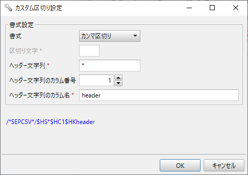
設定値: /*SEPCSV*/$HS*$HC1$HKheader
書式 カンマ区切り
ヘッダー文字列 *
ヘッダー文字列のカラム番号 1
ヘッダー文字列のカラム名 header
参考
ヘッダー明細別レコード形式CSVファイルの場合
Ver. 5.4からは、ヘッダーと明細行を別レコードにしているCSVデータにおいても、ファイル定義の指定により「schema.ini」の書式定義情報を使用せずにデータファイルを処理できます。
出力モード *
印刷データを印刷するときにソートするどうかを設定します。クエリー様式ファイルを利用して印刷する場合は、ここで設定された内容は無効です。 出力モードの設定は、カラム上のセルをクリックした後、
をクリックして項目を選択します。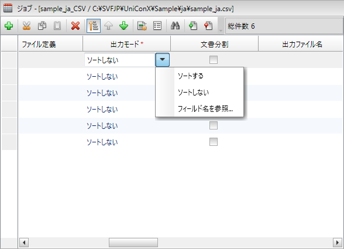
ソートする、ソートしない
［ソートする］と指定した場合、XML様式ファイルで指定されたキーフィールドに従ってソートされ、出力されます。
デフォルトでは、［ソートしない］と設定されています。
フィールド名を参照...
表示される［フィールド選択］ダイアログからフィールド名を選択します。先頭の「?」は自動的に付加されます。
選択したフィールドに入ってくるデータが4の場合は［ソートしない］、5の場合は［ソートする］という文字列に置き換え、出力モードが動作します。
例
フィールド名: ソート選択フィールド
フィールドデータ: 4
［出力モード］設定内容: ?ソート選択フィールド
「ソート選択フィールド」フィールドに「4」のデータが入ると、［ソートしない］と置き換えられます。
文書分割
印刷データの文書分割をするどうかを設定します。クエリー様式ファイルを使用する場合は、ここで設定された内容は無効です。文書分割を設定するには、設定するカラムをクリックしてチェックをオンにします。
チェックをオンにして文書分割を「する」に設定すると、次のいずれかが設定されたジョブが文書分割の判定対象となります。
文書分割条件となる項目に［フィールド名を参照...］を指定した場合
CSV複数コマンド処理モードを使用した場合
置換マスターを使用した場合
文書分割の判定は文書分割条件となる項目の値を1データ行ごとに比較し、値の変化があったかどうかを調べます。値の変化があった場合、文書分割されます。出力ファイル名以外のキーが文書分割条件となる場合、出力ファイルが重複しないようにファイル名に（n）が付加されます（デフォルトの動作）。
文書分割条件となる項目
実行様式名
出力先
出力ファイル名 *1
出力モード
文書名
ユーザー名
コンピューター名 *2
自動印刷先 *2
文書カラム *2
ファイル送信:To *3
ファイル送信:From *3
ファイル送信:Cc *3
ファイル送信:Bcc *3
ファイル送信:Reply-To *3
ファイル送信:件名 *3
ファイル送信:本文*3
*1 文書を分割しない場合には、最初に設定された値が採用されます。
*2 RDEをご利用している場合に設定可能な項目です。
*3 Mail Editionをご利用している場合に設定可能な項目で、メール送信する場合に有効です。
注意
置換マスターを利用して複数の実行様式名を設定する場合、［文書分割］をオフにすると、1つの文書ファイルが生成されます。オンにして「する」に設定すると、複数の文書ファイルが生成されます。
Ver. 10.1以降で［文書分割］を「する」に設定した場合、SVFのプリンター機種「Adobe PostScript」と「PDF」で設定したページの分割設定は無効になります。 SVFのページの分割設定については『SVF帳票出力製品管理ガイド』を参照してください。
なお、Ver. 10.2以降は、［メール設定］－［メール誤送信防止］の設定により、本現象を回避できます。
出力先を複数指定した場合、文書分割はできません。
出力ファイル名
［ジョブ］の［スプールモード］欄が［ファイル出力する］、［ファイルを圧縮して出力する］、［環境設定に従う］のいずれかで、SVF環境設定の［出力先］が［ファイル］と指定されている場合には、その出力ファイルのファイル名を設定します。
出力ファイル名を手入力で設定する場合は、設定するカラム上で左クリックをすると入力できます。
出力ファイル名をダイアログから設定をする場合は、設定するカラム上のセルをクリックした後、
をクリックして項目を選択します。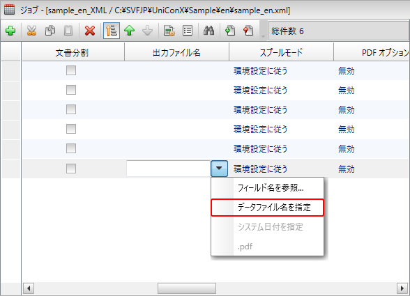
フィールド名を参照...
データファイルのフィールド名に対するデータが、ファイル名として指定されます。表示される［フィールド選択］ダイアログからフィールド名を選択します。データファイルから取得したフィールド保持データが出力ファイル名として使用されます。
例
フィールド名: 仕入先
フィールドデータ: ABC商事
［出力先］設定内容: PDF
［出力ファイル名］設定内容: ?仕入先
「仕入先」フィールドに「ABC商事」のデータが入ると、「ABC商事.pdf」と置き換えられます。
データファイル名を指定
選択すると「%DATAFILENAME%」と記述されます。［データファイル名*］欄に記載したデータファイル名の拡張子を除いたファイル名が出力ファイル名となります。
ディレクトリ指定がない場合は「データファイルディレクトリ+データファイル名.pdf」となり、ディレクトリが指定された場合は、指定に従います。
参考
出力ファイル名にファイルのパスを設定していない場合は、［データファイル名*］欄で設定したデータファイルが存在するディレクトリにファイルが出力されます。ファイルのパスが設定されている場合は、指定したファイルのパス上にファイルが出力されます。
［ジョブ］の［スプールモード］欄が［ファイル出力する］、［ファイルを圧縮して出力する］、［環境設定に従う］のいずれかで、［出力先］が［ファイル］と指定されている場合には、その出力ファイルのファイル名を設定します。
同一ファイル名がすでに存在していた場合、デフォルトでは「指定ファイル名(1).拡張子」と括弧付きの連番が付加されます。
システム日付を指定
ファイル名を設定した場合のみ、システム日付を付加できます。
例
フィールド名: 仕入先
フィールドデータ: ABC商事
［出力先］設定内容: PDF
ファイル出力日時: 2013/12/25 10:15:25
［出力ファイル名］設定内容: ?仕入先+%SYSTEMDATE%
「仕入先」フィールドに「ABC商事」のデータが入ると、「ABC商事20131225101525.pdf」と置き換えられます。
拡張子を指定
［出力先］がファイル機種を指定している場合には、拡張子を選択できます。
スプールモード
出力の方法を選択します。
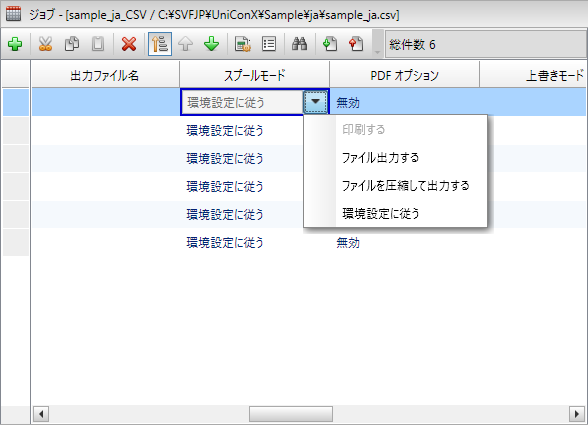
印刷する
データをそのまま印刷します。
ファイル出力する
データをファイルに出力します。
ファイルを圧縮して出力する
データを圧縮して出力します。SVF for Web/Client用ファイルを生成するときに指定します。通常のファイル生成時には使用しないでください。
環境設定に従う
SVF環境設定での設定に従って出力します。
注意
SVF Cloud接続設定が指定されているジョブでは、「環境設定に従う」以外は選択できません。
PDF オプション
［出力先］欄で「PDF」を設定した場合、出力するPDFファイルに対してパスワードなどのセキュリティを施すことができます。
設定されている場合は、［有効］と表示されます。［PDF オプション］欄が［無効］となっているときは、設定がされていません。［無効］または［有効］をクリックすると、［PDF オプション］ダイアログが表示されます。
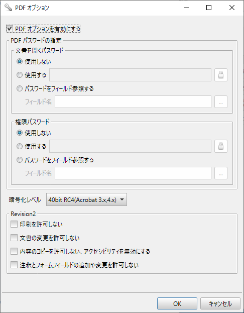
PDF オプションを有効にする
有効/無効を設定します。
PDF パスワードの指定
パスワードはなくさないよう、大切に管理してください。
文書を開くパスワード
［使用する］
パスワードを手動で設定します。をクリックして表示されるダイアログで、パスワードを入力します。
［パスワードをフィールド参照する］
フィールドデータをパスワードとして設定します。をクリックして表示されるダイアログで、パスワードに使用するフィールドを選択します。
選択したフィールドの先頭レコードのデータがパスワードとして適用されます。ただし、文書分割設定をしている場合は、文書分割の起因となる行のフィールドのデータがパスワードとなります。
権限パスワード
PDFファイルの権限やパスワードの変更のためのパスワードを設定します。
パスワードの設定の方法は「文書を開くパスワード」を参照してください。
暗号化レベル
暗号化レベルを「40bit RC4(Acrobat 3.x,4.x)」、「128bit RC4(Acrobat 5 or later)」、「128bit RC4(Acrobat 6 or later)」、「128bit AES(Acrobat 7 or later)」、および「256bit AES(Acrobat 9 or later)」から選択します。暗号化レベルの指定に応じて、権限の表示内容が切り替わります。
文書セキュリティを任意に変更してください。
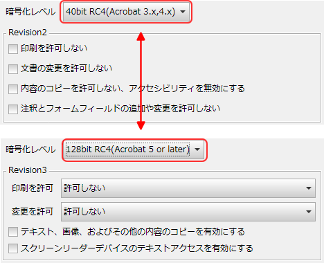
注意
PDFオプションによるセキュリティは、［出力先］が「PDF」の場合のみ有効です。
上書きモード
出力ファイルを上書きするかどうかを設定します。
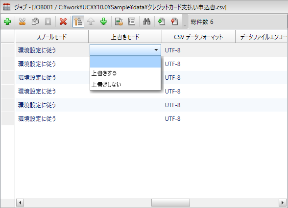
上書きする
同一出力ファイル名が存在する場合は上書きします。
上書きしない
同一出力ファイル名が存在する場合は上書きせずに、「出力ファイル名(1).拡張子」と括弧付きの連番を付加します。
参考
指定がない場合は、［出力設定］画面の［出力ファイルの上書きを行う］欄の設定で実行されます。
CSV データフォーマット
CSVデータファイルのフォーマットを［UTF-8］と［その他］から選択します。データファイルがUTF-8形式以外の場合は、「その他」を選択してください。
データファイルエンコーディング
CSVデータファイルのエンコーディングをJobごとに設定する場合に入力します。
参考
XMLファイルのエンコードの指定はXMLファイルのヘッダーで指定します。
外部プログラム起動
SVF印刷処理終了後に、外部プログラムを起動するか、起動しないかを設定します。
クリックすると、［外部プログラム起動］ダイアログが表示されます。
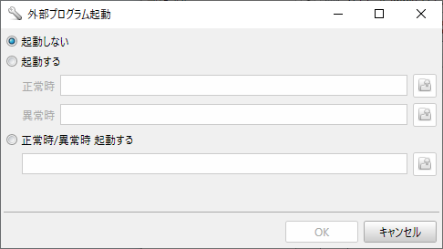
起動しない
SVF印刷処理終了後に、外部プログラムを起動しません。
起動する
SVF印刷処理が正常終了した場合と異常終了した場合とで、異なる外部プログラムを起動します。
［正常時］、［異常時］欄で、をクリックして選択するか、手入力で起動するプログラムを指定します。
正常時/異常時 起動する
SVF印刷処理が正常終了した場合と、異常終了した場合で、同じ外部プログラムを起動します。
をクリックして選択するか、手入力で起動するプログラムを指定します。
外部プログラムを起動する際に、固定値または指定子「%f」を引数として渡すように設定できます。指定子「%f」はUniversal Connect/Xで処理したファイルの絶対パスを外部プログラムに渡します。
固定値を渡す場合
例 C:\SVFTEST\test.exe -10
指定子%fを渡す場合
例 C:\SVFTESTtest.exe %f
制限
外部プログラム起動実行時に設定できる指定子は「%f」のみです。
実行様式ファイル検索パス
XML様式ファイルの検索パスについての設定をします。ここで指定されたパスを優先して検索します。
クリックすると、［実行様式ファイル検索パス］ダイアログが表示されます。
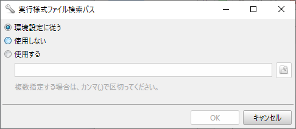
環境設定に従う
SVF環境設定で指定されている検索パスを使用します。
使用しない
SVF環境設定で指定されている検索パスを使用しません。
使用する
SVF環境設定での指定内容は使用せずに、ここで指定された検索パスを使用します。
有効なパスの使用例としては、設計時にビットマップファイルを固定で貼り付けると、様式フォーム上に設計時のビットマップファイルのフルパスが指定されます。
ただし、出力実行時に設計時と同じパスにビットマップファイルがない場合に、実際にビットマップファイルの入っているパスを指定すると、指定したパスから検索を開始します。
パスを複数指定する場合は、カンマ（,）で区切ります。
CSV 複数コマンド処理モード
データファイルとなるCSVファイル内で、<start><end>タグのセットを複数使用する場合は、オンにします。
複数使用しない場合は、オフにします。
FF モード *2
FFモードを使用する場合は、オンにします。CSVデータファイルで、改ページコードの位置により行送りしてから改ページ処理をします。FFモードを使用しない場合は、オフにします。
詳細は「FFモードの設定」を参照してください。
メール送信 *3
生成された出力ファイルをメールで送信できます。
設定されている場合は、［メール送信する］と表示されます。
［メール送信］欄が［メール送信しない］となっているときは、設定がされていません。
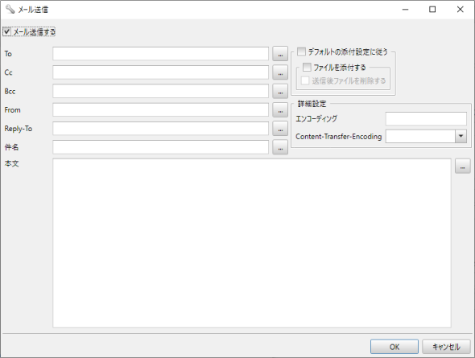
メール送信する
オンにすると、メールを送信する設定になります。
デフォルトの添付設定に従う
オンにすると、［メール設定］画面で指定された設定に従います。
ファイルを添付する
［ファイルを添付する］をオンにすると出力ファイルが添付されます。オフにした場合は、メールのみが送信されます。
送信後ファイルを削除する
［送信後ファイルを削除する］をオンにすると、メール送信終了後、出力ファイルを削除します。メール送信が失敗した場合は、出力ファイルはUniversal Connect/Xのサブディレクトリ「MailErr」内に保存されます。
To、Cc、Bcc、From、Reply-To
メールを送信する際のメールアドレスを設定します。
To
出力ファイルを添付したメールの送信先（To）を設定します。
Cc
出力ファイルを添付したメールの送信先（Cc）を設定します。
Bcc
出力ファイルを添付したメールの送信先（Bcc）を設定します。
From
送信元として表示される宛先を設定します。
Reply-To
受信したメールへの返信先を設定します。
データファイルが書式定義されている場合に、をクリックすると、［フィールド選択］ダイアログが表示されます。
［メール設定］の［デフォルトメール］で宛先を設定している場合でも、各ジョブに対して設定した内容が優先されます。
メールアドレスは次の形式で設定できます。
support@●●●●●.co.jp
<support@●●●●●.co.jp>
山田太郎<support@●●●●●.co.jp>
"山田太郎"<support@●●●●●.co.jp>
フィールド参照をして、各項目をつなげる場合は「+」で連結させます。
複数のメールアドレスを設定する場合は、「;」で区切ります。
例
フィールド名: データ
メールID: support
ドメイン名: @●●●●●.co.jp
To:cde@●●●●●.co.jp
Cc:hij@●●●●●.co.jp
上記の場合、次のように設定します。
設定: ?メールID+?ドメイン名+;+?To+;+?Cc
送信設定:support@●●●●●.co.jp, cde@●●●●●.co.jp, hij@●●●●●.co.jp
件名、本文
送信するメールの件名と本文を設定します。
件名と本文では送信しようとする出力ファイル名(PDF)を指定できます。データファイルが書式定義されている場合に、をクリックすると、［フィールド選択］ダイアログでフィールドを参照できます。
［メール設定］の［デフォルトメール］で「件名」、「本文」を設定している場合でも、各ジョブに対して設定した内容が優先されます。
内容は次の形式で設定できます。各項目をつなげる場合は「+」で連結されます。また、「=PDF」と指定すると、送信する出力ファイル名を参照できます。［本文］でフィールド名を参照して、改行を含む文を構成するには、次のように設定します。
例
出力ファイル名: ウイングアーク商事.pdf
担当者名: 鈴木
営業所名: 飯田橋営業所
上記の場合、本文には次のように入力します。
設定
帳票(=PDF)を送付致します。
よろしくお願いします。
+?担当者名+(改行)
+?営業所名+(改行)
送信メール
帳票(ウイングアーク商事.pdf)を送付致します。
よろしくお願いします。
鈴木
飯田橋営業所
件名および本文で「+」や「?」をデータとして使用する場合は、++、??と同じ文字を2文字続けて入力します。
詳細設定
クリックすると下記の項目を設定できます。通常、設定の変更は必要ありません。設定を変更する場合は、メールサーバー担当者に確認してから行ってください。
エンコーディング
メールのエンコーディングを指定します。
Content-Transfer-Encoding
メール本文のContent-Transfer-Encodingを指定します。7bit、8bit、quoted-printable、base64、binary、uuencodeから選択できます。
設定が完了したら、［OK］をクリックして内容を保存します。
注意
［送信後ファイルを削除する］と設定されている場合、メールが正常に送信されると、［ジョブ］の［出力ファイル名］で設定した出力先からファイルが削除されます。
［To］、［Cc］、［Bcc］などに複数のメールアドレスを設定する場合は、セミコロン「;」で連結して入力します。
Universal Connect/Xでエラーが発生した時は、エラーメール送信を設定している場合のみエラーメールを送信します。エラーメールには、エラーの内容が表示されます。エラーメールについては、「［メール設定］の操作と設定」を参照してください。
［ファイルを添付する］がオンの状態で、「正常にファイル出力され、メール送信に失敗した」場合は、［ジョブ］の［出力ファイル名］欄で設定した出力先からは削除され、「unicon.ini」のインストールディレクトリ上に作成されるMailErrディレクトリに出力ファイルが移動されます。また、出力ファイルと同名のメール送信情報ファイル（XXXX.ERR）も保存されます。
社外ドメインへ送信する場合、いったん正常に送信した後に、しばらくしてエラーメールが戻ってくる場合があります。しかし、送信時にはエラーが発生していないため、Universal Connect/Xサーバーでは自動的にエラー検出はできません。
この場合は、［メール設定］の［Reply-To］欄もしくは［From］欄で設定した宛先にメール送信経路中に存在するSMTPサーバーからエラーメールが返信されます。エラーの内容については、そのエラーメールを確認してください。
［ファイル定義］でファイルを定義していない場合は、をクリックしても何も表示されません。
文書名 *4
RDEにスプールする文書名、SVFスプーラーで表示される文書名、およびPDFファイル出力時の文書のプロパティ（タイトル）を指定します。invoiceAgent 文書管理 / AI OCRに保存する場合は、文書のファイル名（拡張子を含まない）を指定します。
ユーザー名 *4
RDEのユーザー名、またはセキュリティプリント機能で使用するユーザー名を設定します。
コンピューター名 *4
スプール先のRDEがインストールされているコンピューター名を設定します。
自動印刷先 *4
スプール先のRDEに登録されているプリンターの中から、出力プリンターをフィールド参照または手動入力で設定します。複数指定する場合は、カンマ区切りで入力してください。
文書カラム *4
スプール先のRDE側で追加表示させるカラムの参照元を設定します。
RDE項目を追加する場合は、［ジョブ］の［文書カラム］のをクリックします。［文書カラム］ダイアログが表示されます。
［文書カラム］ダイアログ
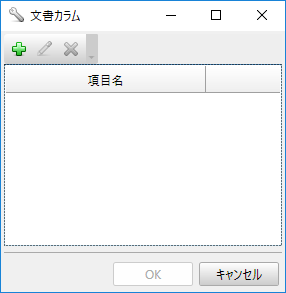
［追加］ダイアログ
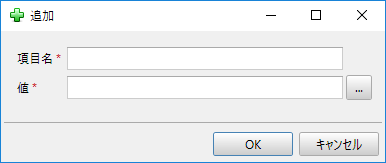
カラムを追加する場合は、［文書カラム］ダイアログでをクリックします。
［追加］ダイアログで、［項目名］と［値］を設定します。項目名に設定できるのは半角英数字のみです。
［値］欄のをクリックすると、登録されているデータファイルのフィールド名を参照できます。
文書カラム設定後は、最初に設定した項目名が［ジョブ］の［文書カラム］欄に表示されます。
カラムを変更する場合は、［文書カラム］ダイアログで変更するカラムを選択し、をクリックします。
カラムを削除する場合は、［文書カラム］ダイアログで削除するカラムを選択し、をクリックします。
上記設定により、RDEユーティリティ画面上に任意の項目が追加されます。
RDEユーティリティ画面－追加後
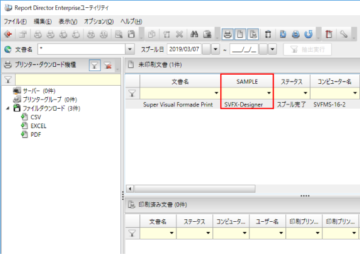
参考
RDE側での表示名はRDE環境設定で設定します。詳細は『RDEスプール管理ガイド』を参照してください。
空白フィールド出力モード
データ行がないデータファイルを処理する場合に、エラーとするかどうかを設定できます。
エラーとせずに帳票を出力する場合は、オンにします。エラーとする場合は、オフにします。
サブ Job ID
現在選択しているジョブ（親ジョブ）にあらかじめ設定済みのジョブ（サブジョブ）を結合して、1つのジョブとして実行する場合に設定します。結合するサブジョブのJob IDを設定します。複数のサブジョブを結合する場合、カンマで区切って指定します。
サブジョブの使用については、「サブジョブの使用について」を参照してください。
実行シート名
Excel様式ファイルを使用する場合の設定項目です。詳細は『Excel様式利用ガイド』を参照してください。
Ver. 10.3以降でSVF Cloud Excel Designerで作成したExcel様式ファイルを使用する場合は、印刷データを流し込むシートを［シート一覧を参照］から選択します。
実行シート番号
Excel様式ファイルを使用する場合の設定項目です。詳細は『Excel様式利用ガイド』を参照してください。なお、SVF Cloud Excel Designerで作成したExcel様式ファイルを使用する場合は、設定できません。
同一様式使用時に改ページ
（Ver. 10.2で対応）
オンにすると、<start><end>タグ単位で改ページを行います。本機能を動作させるには、［CSV複数コマンド処理モード］をオンにする必要があります。なお、本機能が使用できるデータファイルは、CSVファイルのみです。
invoiceAgent設定
（Ver. 10.3で対応）
出力した文書のinvoiceAgent 文書管理 / AI OCRでの格納先を指定します。格納先は、［SVF Cloud接続設定］で設定します。
*1 ［運用設定］で「ファイル監視と即時実行するジョブの指定を行う」欄のチェックをオンにした場合のみ表示される機能です。
*2 ［運用設定］で「FF モードを使用する」欄のチェックをオンにした場合のみ表示される機能です。
*3 Universal Connect/X Mail Editionをご利用している場合にのみ表示される機能です。
*4 RDEを利用している場合にのみ表示される機能です。SVF Cloudを使用する場合、RDEへのスプールはできません。
設定を保存する場合は、［ファイル］－［保存］を選択するか、をクリックします。
サブジョブの使用について
複数のジョブを結合して、1つの出力ファイルとして出力できます。最初に実行するジョブを「親ジョブ」、親ジョブの処理に続けて実行するジョブを「サブジョブ」と呼びます。
サブジョブを使用してタイマー監視、または即時実行する場合、次の設定をしてください。
親ジョブの［対象］のチェックをオン
サブジョブの［対象］のチェックはオフにしてください。親ジョブとサブジョブの両方のチェックをオンにすると、サブジョブはサブジョブとしても通常のジョブとしても扱われます。
親ジョブの［サブ Job ID］に、結合するサブジョブのJob IDを設定
複数のサブジョブを結合する場合、カンマで区切って指定します。
結合するすべてのジョブの［SVF Cloud接続設定］に同じ値を指定（SVF Cloudを使用した出力の場合）
親ジョブとサブジョブは同じ出力サーバーである必要があります。親ジョブとサブジョブとで、接続するSVF Cloudを変えることも、SVF CloudとUniversal Connect/Xサーバー上のSVF実行部製品を混在させることもできません。
サブジョブを使用すると、ジョブは次のように処理されます。
結合したジョブは常に1つの出力ファイルとして出力されます。［文書分割］の設定は無効です。
処理順序は、親ジョブの後に、［サブ Job ID］に指定した順番でサブジョブが処理されます。［運用設定］－［データファイル処理順］の設定は無効です。
サブジョブの処理では、サブジョブで設定した次の設定が有効となります。次の設定以外は、すべて親ジョブの設定が有効となります。
データファイル名
実行様式名
置換マスターファイル名
ファイル定義
CSV データフォーマット
データファイルエンコーディング
注意
データファイルの設定と運用に関する注意事項
サブジョブの［データファイル名］には、ワイルドカードを指定できません。
タイマー監視の対象となるのは、親ジョブのデータファイルです。このため、サブジョブに親ジョブと異なるデータファイルを設定してタイマー監視をする場合、サブジョブ、親ジョブの順でデータファイルが更新されるように運用してください。
［運用設定］－［処理後にファイルを削除する］または［処理後にファイルを保存する］を設定している場合、ジョブ実行後にデータファイルは削除または移動されます。このため、親ジョブとサブジョブの両方のチェックをオンにして実行すると、先行するジョブの実行時にデータファイルが削除または移動されるため、次のジョブの実行時にエラーが発生します。